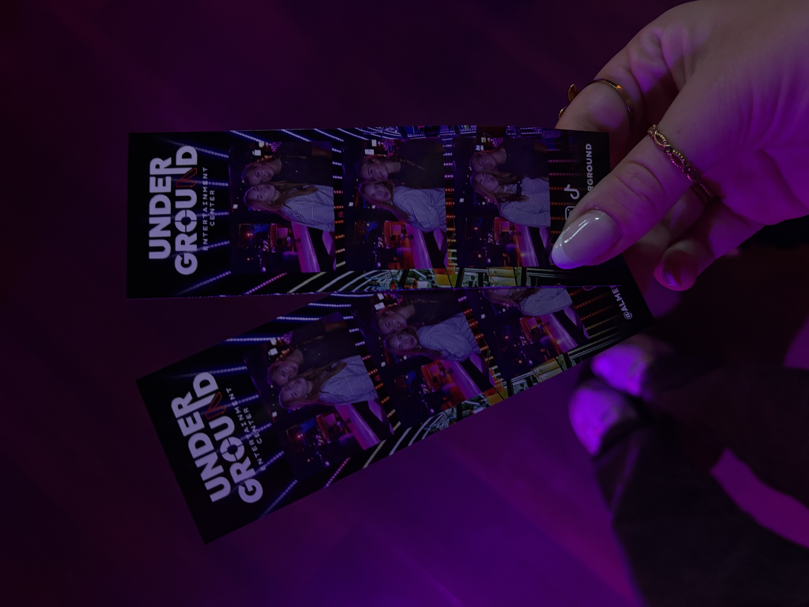
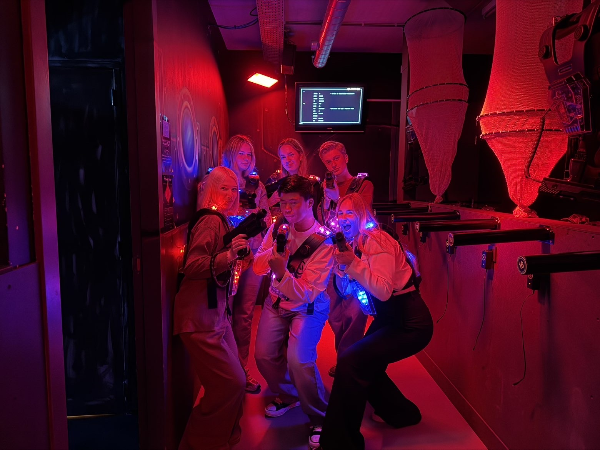
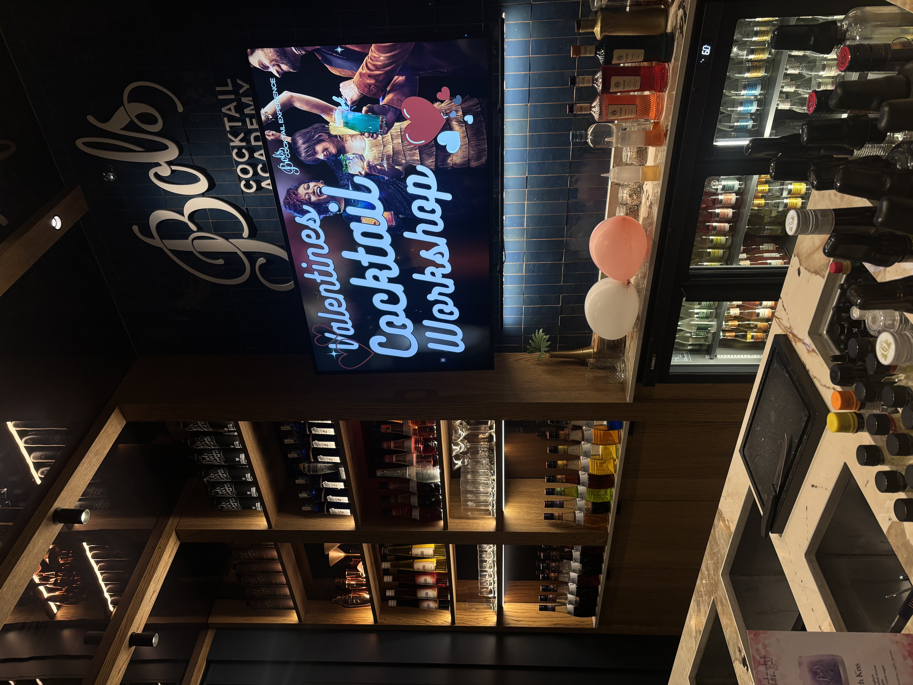

Hi, Welkom bij de Arcade Guide!
Mijn favo activiteiten
Ik vind het leuk om met vrienden de deur uit te gaan en bijv. te gaan lasergamen, naar de bioscoop of iets anders gaan doen. Eens iets wat anders dan alleen maar naar het terras of naar de kroeg. Zo maak je veel leukere herrineringen met zijn allen!
ontdek activiteiten
fovoriete activiteiten
Lasergamen

Met mijn vriendengroep zijn we naar Kokexperience in Harderwijk gegaan, we hebben daar de Pixel floor gedaan en daarna zijn we gaan lasergamen. https://www.kokexperience.nl
Bols cocktailexperience

Met mijn vriend ben ik in Amsterdam naar Bols geweest, je kan daar naar de cocktailexperience met een audiogids, je krijg interessante informatie over Bols en je kan minigames doen. Na de experience krijg je een cokctail en daarna ga je zelf cocktails maken. Niet alleen leuk als date maar ook leuk om te doen met vrienden. https://www.bols.nl
Almere Underground
Wanneer ik met een vriendin er even op uit, dan gaan we naar Almere Underground. Je kan er verschillende activiteiten doen zoals: bowlen, spellen spelen in de AR ruimte, glow in thhe dark midgetgolf, bijlwerpen en nog een paar andere activiteiten. Kortom een hele leuke plek om de dag/avond te besteden. Je kan tussen de spellen door ook nog een lekkere cokctail drinken en een hapje eten. https://www.almereunderground.nl